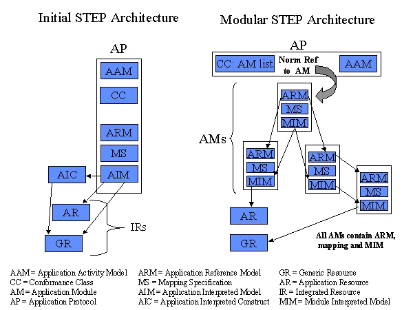
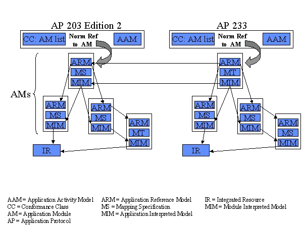

ISO TC184/SC4 N1113
Date: 2001-05-02
Technical Committee 184 for Industrial Automation Systems and Integration Subcommittee 4 for Industrial Data
Guidelines for the content of application protocols that use application modules |
ISO TC 184/SC4 WG10 Technical Architecture
National Institute of Standards and Technology
Building 220/Room A127
Gaithersburg, Maryland 20899
USA
1 Scope
2 Normative references
3 Definitions
4 Application protocol content
ISO 10303 is an International Standard for the computer-interpretable representation and exchange of product data. The objective is to provide a neutral mechanism capable of describing product data throughout the life cycle of a product independent from any particular system. The nature of this description makes it suitable not only for neutral file exchange, but also as a basis for implementing and sharing product databases and archiving.
This International Standard is organized as a series of parts, each published separately. The parts of ISO 10303 fall into one of the following series: description methods, integrated resources, application interpreted constructs, application modules1, application protocols, abstract test suites, implementation methods, and conformance testing. The series are described in ISO 10303-1.
Application modules are the key component of the modularization of the initial STEP architecture. The modularization approach extends the application interpreted construct (AIC) concept of the initial STEP architecture through inclusion of the relevant portions of the AP's application reference model. The basis of the approach is understanding and harmonizing the requirements, both new and those documented in existing APs, grouping the requirements into reuseable modules, documenting the modules, and using the modules in the development of an application protocol. With much of the content of the initial STEP architecture AP now documented in AMs, the role of the AP is to select and constrain a set of the more generic AMs to satisfy information requirements in a particular application context.
The development of an application protocol modularization strategy was driven by several requirements from different sources:
The purpose of this standing document is to provide guidelines for the content of ISO 10303 application protocols (APs) that use application modules (AMs). Application protocols that use application modules provide requirements and information on the industrial use of the application modules that are the data specification for the application protocol. The audience for this document is ISO 10303 application module and modularized application protocol developers.
Figure 1 contrasts the architecture of an application protocol that uses application modules with the initial application protocol architecture.

Figure 1 - Contrasting the AP architectures
This standing document is divided into four clauses. Clause 1 gives general
information on the scope of this standing document. Clause 2 gives a list of
normative reference for this standing document. Clause 3 gives lists of
definitions and abbreviations that help explain the content of this standing
document. Clause 4 gives specific instructions on the content of application
protocols that use application modules.
| NOTE - This document is an adaptation of the guidance found in Guidelines for the development and approval of STEP application protocols, Guidelines for application interpreted model development, and Guidelines for application interpreted construct development. |
1 To be added to ISO 10303-1 as part of the WG10 STEP Modularization PWI responsibilities.
| DRAFT STANDING DOCUMENT | ISO TC184/SC4 N1113 |
This SC4 standing document specifies guidelines for the content of ISO 10303 application protocols that use application modules.
The following are within the scope of this standing document:
The following are outside the scope of this standing document:
The following standards contain provisions which, through reference in this text, constitute provisions of this standing document. At the time of publication, the editions indicated were valid. All standards are subject to revision, and parties to agreements based on this standing document are encouraged to investigate the possibility of applying the most recent editions of the standards indicated below. Members of the IEC and ISO maintain registers of currently valid International Standards.
ISO 10303-1, Industrial automation systems and integration — Product data representation and exchange — Part 1: Overview and fundamental principles.
ISO 10303-11:1994, Industrial automation systems and integration — Product data representation and exchange — Part 11: Description methods: Language reference manual and its Amendment 1.
The following documents contain provisions which, through reference in this text, constitute provisions of this standing document. At the time of adoption, the revisions of the documents indicated were valid. All documents are subject to revision, and users of this standing document are encouraged to investigate the possibility of applying the most recent editions of the documents indicated below.
ISO/TC 184/SC4 N534:1997, Guidelines for application interpreted construct development.
ISO/TC 184/SC4 N535:1998, Guidelines for the development and approval of STEP application protocols.
ISO/TC 184/SC4 N1161:2001, Guidelines for the content of application modules.
ISO/TC 184/SC4 N1029, Guidelines for the development of mapping specifications, 2nd Edition.
ISO/TC 184/SC4 N858, Supplementary directives for the drafting and presentation of ISO 10303, edition 2.
For the purpose of this standing document, the following terms defined in ISO 10303-1 apply.
3.1.1
abstract test suite (ATS)
a part of ISO 10303 that contains the set of abstract test cases necessary for
conformance testing of an implementation of an application protocol.
3.1.2
application
a group of one or more processes creating or using product data.
3.1.3
application activity model (AAM)
a model that describes an application in terms of its processes and information
flows.
3.1.4
application object
an atomic element of an application reference model that defines a unique
application concept and contains attributes specifying the data elements of the
object.
3.1.5
application reference model (ARM)
an information model that describes the information requirements and constraints
of a specific application context.
3.1.6
conformance class
a subset of an application protocol for which conformance may be claimed.
3.1.7
data
a representation of information in a formal manner suitable for communication,
interpretation, or processing by human beings or computers.
3.1.8
implementation method
a part of ISO 10303 that specifies a technique used by computer systems to
exchange product data that is described using the EXPRESS data specification
language.
3.1.9
information
facts, concepts, or instructions.
3.1.10
information model
a formal model of a bounded set of facts, concepts, or instructions to meet a
specified requirement.
3.1.11
integrated resource
a part of ISO 10303 that defines a group of resource constructs used as a basis
for product data.
3.1.12
interpretation
the process of adapting a resource construct from the integrated resources to
satisfy a requirement of an application protocol. This may involve the addition
of restrictions on attributes, the addition of constraints, the addition of
relationships among resource constructs and application constructs, or all of
the above.
3.1.13
PICS proforma
a standardized document in the form of a questionnaire, which, when completed
for a particular implementation, becomes the protocol implementation conformance
statement (PICS).
3.1.14
product
a thing or substance produced by a natural or artificial process.
3.1.15
product data
a representation of information about a product in a formal manner suitable for
communication, interpretation, or processing by human beings or by computers.
3.1.16
protocol implementation conformance statement (PICS)
a statement of which capabilities and options are supported within an
implementation of a given standard. This statement is produced by completing a
PICS proforma.
3.1.17
resource construct
a collection of EXPRESS language entities, types, functions, rules and
references that together define a valid description of an aspect of product
data.
3.1.18
unit of functionality (UoF)
a collection of application objects and their relationships that defines one or
more concepts within the application context such that the removal of any
component would render the concepts incomplete or ambiguous.
For the purpose of this standing document, the following terms defined in ISO
10303-31 apply.
3.2.1
abstract test case (ATC)
a specification, encapsulating at least one test purpose, that provides the
formal basis from which executable test cases are derived. It is independent of
both the implementation and the values.
3.2.2
abstract test method
the description of how an implementation is to be tested, given at the
appropriate level of abstraction to make the description independent of any
particular implementation of testing tools or procedures, but with sufficient
detail to enable these tools and procedures to be produced.
3.2.3
conformance testing
the testing of a candidate product for the existence of specific characteristics
required by a standard in order to determine the extent to which that product is
a conforming implementation.
For the purpose of this standing document, the following terms defined in ISO 10303-202 apply.
3.3.1
application interpreted construct (AIC)
a logical grouping of interpreted constructs that supports a specific function
for the usage of product data across multiple application contexts.
For the purpose of this standing document, the following terms defined in ISO 10303-1001 apply.
3.4.1
application module (AM)
a reusable collection of a scope statement, information requirements, mappings
and module interpreted model that supports a specific usage of product data
across multiple application contexts.
For the purpose of this standing document, the following terms defined in Guidelines for the development and approval of STEP application protocols apply.
3.5.1
data planning model
a model that describes the primary concepts of an application domain and the
relationships among the concepts.
3.5.2
planning model
a model that illustrates the primary concepts of the application domain and the
general relationships among the major concepts. The planning model does not
describe the relationships, e.g. meaning, cardinality, or direction. The
planning model provides an overview of the scope of the AP.
For the purpose of this standing document, the following definitions apply:
3.6.1
application protocol (AP)
a part of this International Standard that species an application module
satisfying the scope and information requirements for a specific application.
| NOTE - Adapted from ISO 10303-1. |
For the purposes of this standing document, the following abbreviations
apply.
| AAM | application activity model |
| AR | application resource |
| AIC | application interpreted construct |
| AM | application module |
| AP | application protocol |
| ARM | application reference model |
| CC | conformance class |
| GR | generic resource |
| InfRM | informative reference model |
| IR | integrated resource |
| MIM | module interpreted model |
| MS | mapping specification |
| UoF | unit of functionality |
| URL | universal resource locator |
This clause provides an overview of the contents of an application protocol that uses application modules. The contents of an application protocol that uses application modules are shown in Figure 2 and are explained in the subsequent subclauses. The major components of an AP are: 1) the scope and reference to a data specification, 2) industry terminology, and 3) conformance requirements. Additionally, each application protocol shall have published test cases and may have an associated abstract test suite (ATS) that makes use of any ATSs or validation results associated with the used application modules.
| Foreword Introduction 1 Scope 2 Normative references 3 Definitions and abbreviations 4 Information requirements 4.1 Industry specific terminology 4.2 Data specification 5 Conformance requirements Annexes A Implementation method specific requirements B Protocol Implementation Conformance Statement (PICS) C Information object registration D Application activity model (optional) E Application reference model diagrams (optional) F EXPRESS listing (optional) G Application protocol implementation and usage guide (optional) H Technical discussions (optional) Bibliography (optional) Index |
The Introduction for the AP shall provide an overview of the technical content and explain how the AP can be used for industrial activities. The Introduction may include a planning model that provides a high level description of the concepts supported by the AP. If present, this model shall have boxes with the concepts named and lines connecting those concepts that have some relationship. The planning model does not describe the relationships, e.g. meaning, cardinality, or direction. For APs designed as part of a suite of harmonized APs, the Introduction shall explain the overlaps and interfaces between the APs. The planning model may be used to illustrate these overlaps and interfaces.
Clause 1 of an AP shall define the domain of the AP and summarize the fundamental concepts and assumptions of the scope, the functionality of the AP, and the types of information that are accommodated by the AP. A description of the functionality and information that are specifically outside the scope of the application shall be defined to clarify the domain of the AP.
The scope and requirements identify the primary concepts and relationships to be supported by the AP. The definition of the scope and information requirements begins with the formulation of a statement of the application protocol functional requirements. This statement shall define the type(s) of information, the life cycle stages supported, the discipline views of the data that are within scope, the data application(s), and the use of the data within the application(s) targeted for the AP. The detailed scoping and information requirements definition shall follow from this statement.
For clarification, the scope statement may also identify the type(s) of information, the type(s) of products, the application processes, the types of product data, and the discipline views of the data that are outside of the scope.
NOTE - The scope of an AP is often based upon an activity model. Activities, inputs, controls, outputs, and mechanisms may be determined to be in scope for the AP. The inclusion of mechanisms, e.g., resources and tools, in an AP should be carefully analyzed. Only those mechanisms that are organization and enterprise independent should be included in the scope of an AP.
All normative references shall be listed in clause 2 of an AP. Normative references may be dated or undated ISO 10303 standards as appropriate for the AP. The minimal required set of normative references are as follows :
ISO 10303-1 Industrial automation systems and integration - Product data representation and exchange - Part 1: Overview and fundamental principles.
ISO 10303-11 Industrial automation systems and integration - Product data representation and exchange - Part 11: Description methods: The EXPRESS language reference manual.
ISO 10303-31 Industrial automation systems and integration - Product data representation and exchange - Part 31: Conformance testing methodology and framework: General concepts.
ISO 10303-41, Industrial automation systems and integration — Product data representation and exchange — Part 41: Integrated resources: Fundamentals of product description and support.
ISO/IEC 8824-1:1995, Information technology - Open systems interconnection - Abstract syntax notation one (ASN.1) - Part 1: Specification of basic notation.
The normative references shall include the application module directly used by the application protocol.
Clause 3 of an AP shall include definitions of all concepts necessary to understand the Introduction, Scope, and Information requirements clauses. This clause may include concepts that are defined further in the Information requirements clause. The concept definitions provided in this clause shall be consistent with the complete definitions provided in the Information requirements clause.
This clause shall contain at least three subclauses: list of terms defined in ISO 10303-1 and used in the AP, terms defined in the AP, and abbreviations and symbols used in the AP. This clause shall list the terms defined in other ISO standards, including AMs, that are necessary for understanding the AP. Should the AP require industry specific terminology for any of the ARM concepts found in AMs, this clause shall contain the definitions of those industry specific terms.
Clause 4 of an AP shall describe the information requirements of the AP. The first paragraphs of this clause provide a high level description of the information requirements that are supported by the AP and a summary of the structure used to partition the information requirements. This clause may include a description of the types of information supported by the AP, any restrictions on the information supported, and the supported uses of the defined information. This clause shall provide all additional information on the fundamental concepts and assumptions (initially introduced in clauses 1 and 3) which is necessary for complete understanding of the information requirements and the scope boundaries. This clause shall include subclauses for the data specification and industry specific terminology.
This clause may include a data planning model which describes the primary concepts of the ARM and the relationships among the concepts. The planning model is at a high level of abstraction and does not include details such as cardinalities of relationships. The planning model follows no specific methodology. The data planning model may include the UoFs of the AP and is used to introduce the detailed requirements provided in the referenced application module. If an application activity model is present, this clause shall include a note that refers the reader to the annex containing that model. If an application reference model is present, this clause shall include a note that refers the reader to the annex containing that model that explains the relevance and roles of the required information.
If an AP specifies industry specific terminology, it is documented in 4.1 of the AP. The correspondence between the industry specific terminology and the terminology defined in the ARMs of the AMs comprising the AP shall be included. An informative ARM corresponding to the scope of the AP may be defined and may be represented using industry terminology. This representation of the ARM shall not modify the data or relationships documented in the ARM other than by renaming those data and relationships. If specified in the AP, the EXPRESS-G diagrams and EXPRESS for this informative ARM shall appear in annexes, not in clause 4.
The industry specific terminology is specifed as an untitled, two column table without borders with the left column having the module term and the right column having the industry term. The table shall be introduced with the following text "For the purposes of this part of ISO 10303, the following industry terminology applies where the first term is that found in the ARM of the <insert AM name here> AM and the second term is the industry specific term."
Clause 4.2 of an AP shall specify the application module that is the data specification for the AP. The referenced application module may use other application modules. Using an application module as the data specification for the AP enables the use of the entire data specification for an AP in a larger-scoped AP.
EXAMPLE - Figure 3 shows how ISO 10303-233 (AP233) might be a modular application protocol extending the scope of ISO 10303-203 Edition 2 (AP203) based on AP 233 using the application module that is the data specification for AP 203 and other application modules interpreted into the integrated resource schemas.

Figure 3 - AP233 using AP203 the application module
Clause 5 of an AP shall specify the conformance requirements on
implementations of the AP. Conformance classes that are subsets of the data
specification of the AP may be defined. A conformance class is specified as a
list of application modules that specify the entities included in the
conformance class. With the exception of the application module that is
normatively referenced by the AP in 4.2, if an application module appears in the
list that is the basis for a conformance class , all application modules used by
that application module shall also appear in the list. The conformance class
specification may also include:
The implementation method specific requirements shall be in addition to those listed in the AP's conformance requirements clause. This annex may specify the meaning of values not given in the normative clauses. If no implementation specific requirements are specified, this fact shall be stated in this annex.
The AAM includes the definition of the inputs, controls, outputs, and some of the mechanisms of those activities. Only those mechanisms that are organization and enterprise independent shall be included.
The first paragraphs of this annex shall explain the context of the AAM and summarize the assertions on which the AAM is based. The definitions for all activities and information flows in the AAM shall be provided in D.1, and the IDEF0 diagrams shall be provided in D.2.
The ARM shall be documented by use of EXPRESS-G. The ARM diagrams, together with the AP scope statement and the ARMs of the AMs comprising the AP, should be sufficient for a person familiar with the application to understand the AP domain.